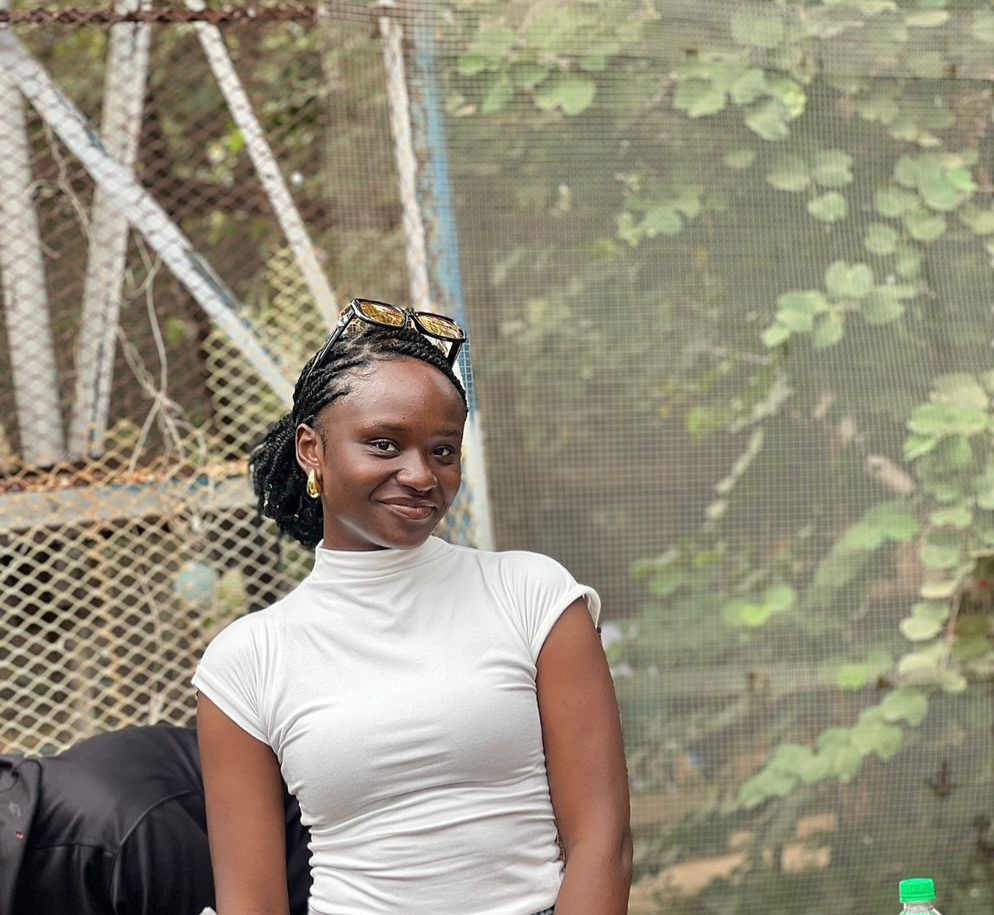

A propos de moi
Bonjour, Je suis LUCIE KIFUNGO et je suis étudiante en Sciences informatique à L'UDBL. Je suis passionnée du code, de l'administration système. J'aime apprendre des nouvelles chose et ameliorer mes compétences dans le code et l'as.
Mon objectif est de créer une strucutre des codeurs, administrateurs reseau, tout en developpant mes compétences dans le domaine du numérique.
Mes Compétences
| CATEGORIE | COMPETENCES | NIVEAU |
|---|---|---|
| Programmation | HTML ,CSS ,JAVAScript ,python | avancé |
| Design | figma , PhotoShop(bases) | intermédiaire |
| langue | Francais (natif) , anglais (fluide) | avancé |
| outils | git, vs code ,suite office | avancé |
| soft skills | communication, résolution de problemes ,autonomie | expert |